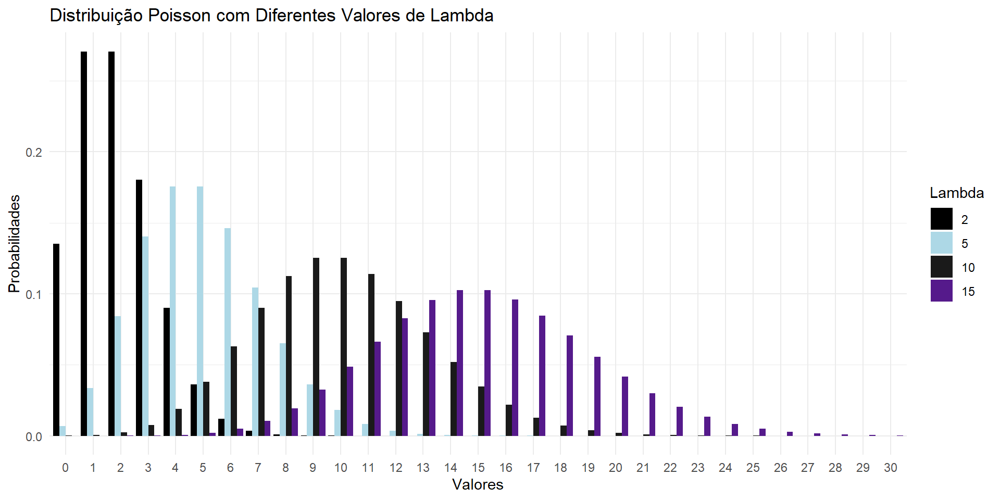
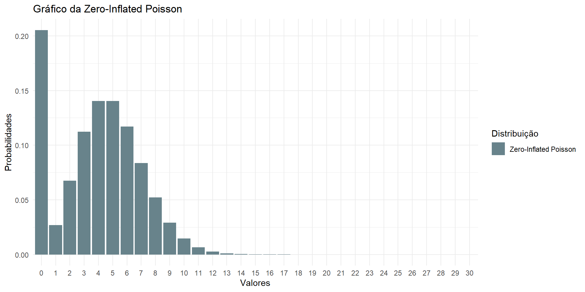

| sexo | Média | Mínimo | Q1 | Q2 | Máximo | Q3 | Desvio Padrão | Amplitude | IQR | Curtose | Assimtria | CV |
|---|---|---|---|---|---|---|---|---|---|---|---|---|
| Feminino | 1.47 | 0 | 0 | 1 | 10 | 2 | 1.55 | 10 | 2 | 5.49 | 1.38 | 1.06 |
| Masculino | 1.88 | 0 | 0 | 1 | 19 | 3 | 2.18 | 19 | 3 | 15.70 | 2.67 | 1.16 |
Regressão Poisson e Binomial Negativa inflâcionada de ZEROS!!!
Thalis Rebouças e Robert Oliveira
2023-06-20
Sumário de aprendizagem
Vamos explicar um pouco sobre
⬜ O que é o Regressão Poisson?
⬜ O que é o Regressão Binomial Negativa?
⬜ O que é o que é ser inflâcionada por zeros?
⬜ Exemplo de aplicação real
⬜ Aplicação no R!
Vamos lá!
Distribuição Poisson
Resumo sobre essa distribuição
Primeiro vamos da falar sobre distribuição poisson:
\[ f(x) = P(X=x) = \dfrac{e^{-\lambda}\lambda^x}{x!}I_{(0,\infty)}\]
É utilizadas para dados que envolvem dados de contagem.
É utilizada em dados discretos.
Suporte de zero a infinito.
A esperança é igual a variância (\(\lambda\));Equidispersão.
Soma \(n\) v.a.s independetes de poisson lambda é igual a soma dos lambdas.
Padrões em processos de contagem
Equidisperssão (Var(Y) = E(Y)) Padrão aleatório
Subdispersão (Var(Y) < E(Y)) Padrão Uniforme
Superdispersão (Var(Y) > E(Y)) Padrão agragado
Caso especiais da Poisson
- Temos uma distribuição binomial(\(n,\pi\)) e caso o limite de n for para \(\infty\) e \(\pi\) tende a zero, com \(\lambda = n\pi\) :
\[ \lim_{n \rightarrow \infty \ \ \pi \rightarrow 0} \left[ {n \choose k} \left(\dfrac{\lambda}{n}\right)^k \left(1 - \dfrac{\lambda}{n}\right)^{n-k} \right] = \dfrac{e^\lambda\lambda^k}{k!} \]
- Resultado do processo estocástico de Poisson, em que os eventos contados ocorrem aleatoriamente ao longo do tempo, espaço ,etc.
Regressão Poisson
Definição
Modelo de regressão Poisson ou Log linear de Poisson é comumente utilizado em análise de dados de contagem.
As pressuposições desse modelo é inerente a distribuição Poisson.
Especificação do modelo
- Seja \(Y\) um variável aleatória independetes com covariáveis \(x_i \ ,\ I_{i(1,..,n)}\)
\[ f(y_i|x_i) = \dfrac{e^{-\mu_i}(\mu_i)^{y_i}}{y_i!} , I_{y(0,1,2,...,\infty)} \]
- Sendo as cováriaveis do modelo :
\[ \ln(\mu_i) = x_i'\beta , \] Em que \(\beta\)(beta) é o vetor de parâmetros do regressão.
Propriedades
\(f(y_{i}|\boldsymbol{x_{i}})=\frac{e^{-\exp(\boldsymbol{x'_i\beta})}{\exp({\boldsymbol{x'_i\beta}})}^{y_i}}{y_i!}\)
\(E\left [ y_{i}|\boldsymbol{x_{i}} \right ]= \mu_{i}=\exp\left ( \boldsymbol{x'_{i}\beta} \right )\)
\(Var\left [ y_{i}|\mathbf{x_{i}} \right ]= \mu_{i}=\exp\left ( \boldsymbol{x'_{i}\beta} \right )\)
Estimação por Máxima Verossimilhança
Log-verossimilhança: \(l(\boldsymbol{\beta})=\sum_{i=1}^{n} \{ y_{i}\boldsymbol{x_{i}'\beta}-\exp{(\boldsymbol{x_{i}'\beta})}\}-\ln(y_{i}!));\)
Vetir escore: \(\boldsymbol{S}(\boldsymbol{\beta})=\frac{\partial l(\boldsymbol{\beta};\boldsymbol{y})}{\partial \boldsymbol{\beta}}= \sum_{i=1}^{n}(y_{i}-\exp(\boldsymbol{x_{i}'\beta}))\boldsymbol{x_{i}};\)
Matriz Informação: \(\boldsymbol{I({\beta})} = \sum_{i=1}^n \mu_i \boldsymbol{x_i x'_i} = \exp{(\boldsymbol{x'_i \beta})\boldsymbol{x_i x'_i}};\)
Distribuição assintótica: \(\boldsymbol{\hat{\beta}} \overset{a}{\sim} N \left ( \boldsymbol{\beta}, \left [ \sum_{i=1}^n \mu_i \boldsymbol{x_i x'_i} \right ]^{-1} \right );\)
Modelo Linear Generalizado
A Regressão Poisson é um caso particular dos Modelos Lineares Generalizados (MLG). Algumas propriedades dessa classe de modelos:
Os estimadores são consistentes ainda que a distribuição especificada seja incorreta, mas desde que a média condicional de \(Y\) seja declarada corretamente;
Os erros padrões, intervalos de confiança e testes de hipóteses, no entanto, ficam comprometidos;
Modelo Linear Generalizado
O ajuste de um MLG requer apenas a especificação:
Da esperança de \(Y\) condicional às covariáveis, mediante especificação do preditor linear e da função de ligação;
Da variância condicional, mediante especificação da função de variância \(V(\mu)\), possível inclusão do parâmetro de dispersão \((\phi)\), ou sua estimação por métodos robustos (abordagem de Quase-Verossimilhança).
Vamos para agora para Distribuição binomial negativa
Distribuição binomial negativa
Distribuição de probabilidades: \[ P(Y=k) = \left ( \begin{matrix} r+k-1\\ r-1 \end{matrix} \right ) (1-p)^rp^k, \hspace{0,2cm} I_{k(0,1,2,...,\infty)} \] sendo \(r=\alpha\) e \(p=\lambda/(\lambda+\alpha),\) com \(0<p<1\) e \(r>0\).
Modelagem do número de “sucessos” até o r-ésimo “fracasso” (\(r = 1,2,3,...\)), configurando uma generalização da distribuição geométrica (para \(r=1\)).
Modelagem de alguns tipos de processos pontuais envolvendo contágio
Outra forma da Binomial Negativa
- Função de probabilidades: \[ P(Y=k)=\frac{\Gamma(\alpha+k)}{\Gamma(k+1)\Gamma(\alpha)}\left ( \frac{\lambda}{\lambda+\alpha} \right )^{k} \left( \frac{\alpha}{\lambda+\alpha} \right )^{\alpha}, k=0,1,2,...; \alpha > 0, \lambda>0 \]
\[ E(Y)=\lambda \]
\[ Var(Y)= \lambda+ \alpha^{-1} \lambda^2 \] - Assim, para qualquer \(\alpha>0\), temos \(Var(Y)>\lambda\).
- A distribuição binomial negativa tem como caso limite distribuição Poisson, quando \(\alpha \rightarrow \infty\).
Propriedade
- A principal propriedade para a distribuição binomial negativa é que em um processo de contagem heterogêneo, em que \(Y \sim Poisson( \theta)\) e \(\theta\) tem distribuição \(Gama(\alpha, \beta):\)
\[ g\left ( \theta;\alpha,\beta \right )=\frac{\beta^{\alpha}}{\Gamma\left ( \alpha \right )}\theta^{\alpha-1}e^{-\beta \theta},\quad \alpha, \beta, \nu>0, \]
com \(E(\theta)=\theta=\alpha /\beta\) e variância \(Var(\theta)=\alpha /\beta^2.\)
- Como resultado, temos uma mistura Poisson-Gamma, resultando, marginalmente (em relação a \(\theta\)), na distribuição binomial negativa.
Comparação Binomial Negativa x Poisson
Regressçao binomial Negativa
O modelo de regressão com resposta binomial negativa pode ser especificado fazendo \(E(y|\boldsymbol{x})=\exp(\boldsymbol{x'\beta}).\)
Para valores fixados de \(\alpha\), a distribuição binomial negativa fica expressa na forma da família exponencial linear, contemplada pela teoria de MLG.
A estimação dos parâmetros do modelo se dá numericamente, segundo um algoritmo em duas etapas, em que \(\alpha\) e \(\boldsymbol{\beta}\) são estimados condicionalmente até convergência.
O que é ser Inflacionda de zeros ?
Excessos de zeros
Casos em que a proporção de valores nulos na amostra é superior àquela estimada por um modelo de contagem. No caso Poisson \(e^{-\lambda}\)
Geralmente contagens com um número excessivo de valores nulos apresentam superdispersão (ocasionada pelo excesso de zeros).
Os modelos mais flexíveis abordados não capturam esse excesso de zeros e não se ajustam adequadamente.
Excessos de zeros
Causas desses zeros
Uma limitação das abordagens estudadas é que as contagens nulas e não nulas são provenientes do mesmo processo gerador dos dados.
Para dados com excesso de zeros, é razoável a suposição da haver mais de um processo gerador atuando na geração dos dados.
Assim a ocorrência de valores nulos podem ser caracterizada como:
zeros amostrais: Ocorrem segundo um processo gerador de contagens (e.g Processo Poisson).
zeros estruturais: Ausência de determinada característica da população.
Exemplo: Um estudo que visa avaliar a quantidade de produtos comprados em um mercado por uma família na última semana. A variável de interesse é o número de itens comprados.
zeros estruturais: Se a família não foi ao mercado na última semana. Inevitavelmente o número de produtos será 0.
zeros amostrais: A família foi ao mercado, porém não adquiriu nenhum produto.
Como modelar esses zeros ?
Modelagem para contagens com excesso de zeros
Como há dois processos que geram os valores da população, na modelagem deve-se considerar ambos. As principais abordagens nestes casos são via:
Modelos de barreira (Hurdle Models): que desconsidera os zeros amostrais e modela os zeros estruturais e as contagens positivas.
Modelos de mistura (Zero Inflated Models): que modela os zeros (estruturais e amostrais) em conjunto com as contagens positivas .
Modelo Zero Inflated
O que é esse modelo ?
É um modelo que considera uma mistura de modelos,ou seja, seria um modelo sem restrições ou trucamentos e outros com restrições à direita do ponto \(y\) igual a um.Além disso, os zeros são caracterizados em amostrais e estruturais.
Definições
- Distribuição de Probabilidade
\[ Pr(Y=y) = \begin{cases} f_z(0) + 1(-f_z(0))f_c(Y=y) ,&\ se \ y =0 \\ (1-f_z(0))f_c(Y=y) ,& \ se \ y > \ 0 \end{cases} \]
Momentos
- Média
\[ E(Y) = 1-f_z(0)E(Y^*) \]
- Variância
\[ Var(Y) = 1-f_z(0)E(Y^*) [E(Y^{*^2})-(1-f_z(0)E^2(Y^*))] \]
Distribuição zero Inflated
Temos um modelo de mistura Y com duas funções(\(f_Z \ e \ f_c\))
\(f_z\) é um função de probabilidade com muitos valores no ponto zero, ou seja, degenerada no ponto y igual a zero.
\(f_c\) é uma função pde probabilidades para dados de contagem.
obs: Mesmo assim \(f_c\) pode apresntar sub,superdispersão ou excesso de valores em outro ponto.
Comparação da Poisson,binomial e Zero Inflated
Modelo Zero Inflated
Consideram uma mistura de modelos;
- Os zeros agora são caracterizados em amostrais e estruturais;
- Há contribuição para estimação da probabilidade em zero de duas funções de probabilidade;
- São chamados de modelos de mistura ou inflacionados de zero (Z I);
- Esta abordagem “mistura“ um modelo de contagem sem restrição e um modelo censurado à direita no ponto y = 1.
Modelo Zero Inflated
Distribuição de Probabilidade: \[ Pr(Y = y) = \begin{cases} f_z(0) + (1-f_z(0))f_c(Y=y) & \text{se } y = 0,\\ (1 - f_z(0)) f_c(Y = y) & \text{se } y = 1, 2, \dots \end{cases} \] Média e Variância : \[ \begin{cases} E(Y) = (1-f_z(0)E(Y^*)\\ V(Y) = (1-f_z(0)E(Y^*)[ E({Y^*}^2) - (1- f_z(0)E^2(Y^*)] \end{cases} \]
Misturas mais comuns
Pode-se propor diferentes distribuições para \(f_z\) e \(f_c\). Uma escolha natural para \(f_z\) é a Bernoulli e para \(f_c\) a Poisson. Assim
$$ \[\begin{align} &f_z \sim Bernoulli(\pi) \\ &f_c \sim Poisson(\lambda) \end{align}\]
\[ Sendo , \] P(Y = y) = \[\begin{cases} (1 - \pi) + \pi e^{-\lambda} & \text{se } y = 0,\\ \pi \left ( \frac{e^{-\lambda} \lambda^y}{y!} \right ) & \text{se } y = 1, 2, \dots \end{cases}\]$$
Embora essa escolha de modelo seja o que tem o maior suporte computacional, ressalta-se que outras distribuições podem ser escolhidas para ambas as partes \(f_z\) e \(f_c\).
Fazendo Regressões com essa misturas.
- Incorporando covariáveis em \(f_z\) e \(f_c\) na forma \(h(Z\gamma)\) e \(g(X\beta)\), respectivamente.
- As funções \(h(.)\) e \(g(.)\), são as funções de ligação escolhidas conforme modelos \(f_z\) e \(f_c\).
- O modelo de regressão {} terá, portanto, os vetores de parâmetros \(\beta\), \(\gamma\) e potencialmente \(\phi\) (caso um modelo com parâmetro de dispersão for considerado)
- Como agora são modelos misturados a comparação entre \(\beta\) e \(\gamma\) não tem a mesma interpretabilidade.
- Para comparação de modelos tradicionais contra os modelos de mistura, o teste de Vuong para modelos não aninhados pode ser aplicado.
Funções de Verossimilhaça para Zero Inflated
Função de verossimilhança
\[ \begin{align*} L(\underline{\theta}; &\underline{y}) = \prod_{i=1}^n \textbf{1}^* \left ( (1-f_{z_i}(0)) f_{c_i}(y_i) \right ) \cdot \\ &\prod_{i=1}^n (1-\textbf{1}^*) \left ( f_{z_i}(0) + (1-f_{z_i}(0))f_{c_i}(0) \right ) \end{align*} \]
Sendo \(\textbf{1}^*\) a função indicadora que assume o valor 1 se \(y > 0\) e 0 se \(y = 0\) e \(\underline{\theta}\) o vetor de parâmetros do modelo ( \(\beta\), \(\gamma\) e \(\phi\), se houver).
Função de log-verossimilhança
\[ \begin{align*} l(\underline{\theta}; &\underline{y}) = \sum_{i = 1}^n \textbf{1}^* \left ( \log( 1-f_{z_i}(0)) + \log(f_{c_i}) \right ) + \\ &\sum_{i = 1}^n (1-\textbf{1}^*) \left ( \log(f_{z_i}(0) + (1-f_{z_i}(0))f_{c_i}(0)) \right ) \end{align*} \]
Sendo \(\textbf{1}^*\) a função indicadora que assume o valor 1 se \(y > 0\) e 0 se \(y = 0\) e \(\underline{\theta}\) o vetor de parâmetros do modelo ( \(\beta\), \(\gamma\) e \(\phi\), se houver).
No R!
Modelos Zero Inflated no R
Temos o pacote pscl (Political Science Computational Laboratory, Stanford University) e o pacote VGAM(Vector Generalized Linear and Additive Models).
library(pscl)
zeroinfl(y ~ fc_preditor | fz_preditor, dist = "poisson", link = "logit")
library(VGAM)
vglm(y ~ preditor, family = zipoisson)
Exemplo no R!
Temos a base bioChemists que temos uma amostra de 915 bioquímicos graduados.
Sendo:
- art: O número de artigos producidos nos últimos 3 anos de Doutorado
- fem: Gênero do estudande
- mar: Estado cívil
- kid5: Se tem filhos até 5 anos
- phd: prestígio do departamento de doutoramento
- ment: Artigos produzidos por orientador de doutorado nos últimos 3 anos
Análise Explolátoria
Outros Modelos
- Modelos de Barreira Hurdle
- Modelo Poisson-Generalizada
- Modelo COM-Poisson
- Modelo Gamma-count
- Modelos de Efeito Aleatório
Referências
Paula, G. A. (2013). Modelos de regressão com apoio computacional. IME-USP, São Paulo.
Winkelmann, R. (2008). Econometric analysis of count data (5th Ed.). Springer Science & Business Media.
CONSUL, P. C Generalized Poisson Distributions: Properties and Applications. Statistics: Textbooks and Monographs, New York: Marcel Dekker Inc. 1989.
Long, J. Scott. 1990. The origins of sex differences in science. Social Forces. 68(3):1297-1316.
Long, J. Scott. 1997. Regression Models for Categorical and Limited Dependent Variables. Thousand Oaks, California: Sage.
Slides por Thalis e Robert, feito em Quarto. Código disponível no GitHub.